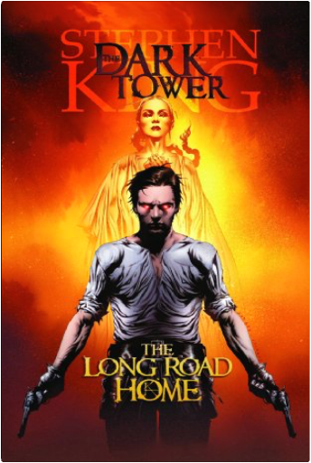
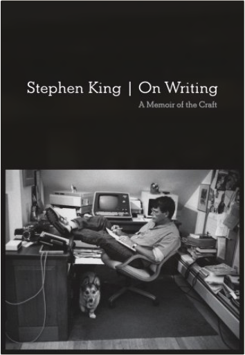
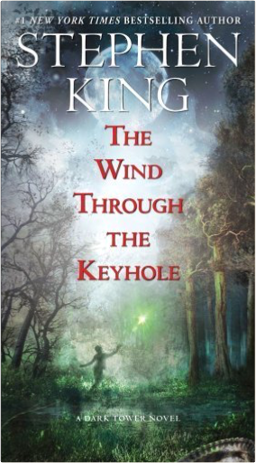
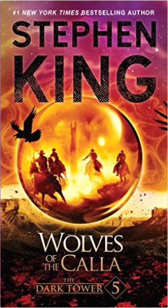
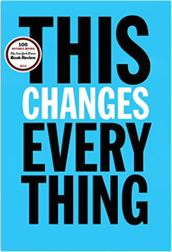
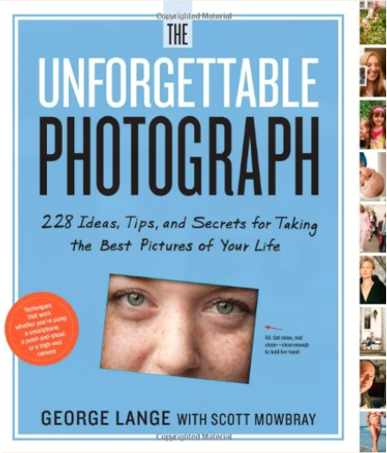
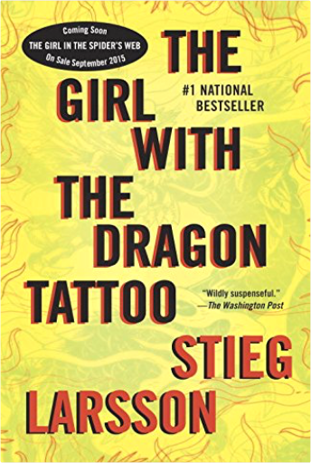
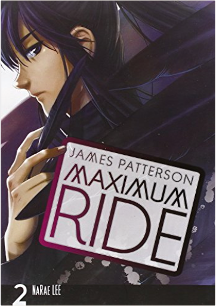
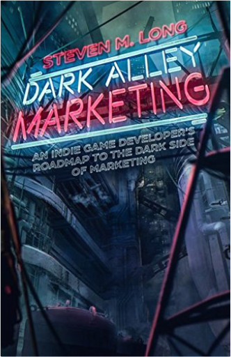

 Dark Tower: The Long Road HomeStephen King, Peter David, Robin Furth, Richard Isanove It's the return of the best-selling comic book series, inspired by Stephen King's epic The Dark Tower! Gunslinger Roland Deschain has seen the death of his lover Susan Delgado. And the Big Coffin Hunters who burned her at the stake are now in pursuit of Roland and his ka-tet Cuthbert and Alain. The friends are forced to flee into the desert with the deadly posse in hot pursuit... .and Roland is in a coma! Don't miss the next chapter in the saga of the Gunslinger whose quest for the Dark Tower will shake the foundation of reality itself! Collects Dark Tower: The Long Road Home #1-5.  On Writing: 10th Anniversary Edition: A Memoir of the CraftStephen King Immensely helpful and illuminating to any aspiring writer, this special edition of Stephen King’s critically lauded, million-copy bestseller shares the experiences, habits, and convictions that have shaped him and his work.
“Long live the King” hailed Entertainment Weekly upon publication of Stephen King’s On Writing. Part memoir, part master class by one of the bestselling authors of all time, this superb volume is a revealing and practical view of the writer’s craft, comprising the basic tools of the trade every writer must have. King’s advice is grounded in his vivid memories from childhood through his emergence as a writer, from his struggling early career to his widely reported, near-fatal accident in 1999—and how the inextricable link between writing and living spurred his recovery. Brilliantly structured, friendly and inspiring, On Writing will empower and entertain everyone who reads it—fans, writers, and anyone who loves a great story well told. Song of SusannahStephen King Soon to be a major motion picture starring Matthew McConaughey and Idris Elba
The penultimate volume in the Dark Tower series, The Dark Tower VI: Song of Susannah, a #1 New York Times bestseller, is a pivotal installment in the epic saga.
Susannah Dean is possessed, her body a living vessel for the demon-mother Mia. Something is growing inside Susannah's belly, something terrible, and soon she will give birth to Mia's "chap." But three unlikely allies are following them from New York City to the border of End World, hoping to prevent the unthinkable. Meanwhile, Eddie and Roland have tumbled into the state of Maine — where the author of a novel called 'Salem's Lot is about to meet his destiny....  The Wind Through the Keyhole: The Dark Tower IV-1/2Stephen King Soon to be a major motion picture starring Matthew McConaughey and Idris Elba
The Wind Through the Keyhole is another of Master of Horror Stephen King’s New York Times bestselling installment in the massively popular Dark Tower series, a fabulously satisfying standalone story and a perfect addition to the series for new fans and old fans alike.
Roland Deschain and his ka-tet—Jake, Susannah, Eddie, and Oy, the billy-bumbler—encounter a ferocious storm just after crossing the River Whye on their way to the Outer Baronies. As they shelter from the howling gale, Roland tells his friends not just one strange story but two...and in so doing, casts new light on his own troubled past.
In his early days as a gunslinger, in the guilt-ridden year following his mother’s death, Roland is sent by his father to investigate evidence of a murderous shape-shifter, a “skin-man” preying upon the population around Debaria. Roland takes charge of Bill Streeter, the brave but terrified boy who is the sole surviving witness to the beast’s most recent slaughter. Only a teenager himself, Roland calms the boy and prepares him for the following day’s trials by reciting a story from the Magic Tales of the Eld that his mother often read to him at bedtime. “A person’s never too old for stories,” Roland says to Bill. “Man and boy, girl and woman, never too old. We live for them.” And indeed, the tale that Roland unfolds, the legend of Tim Stoutheart, is a timeless treasure for all ages, a story that lives for us.
King began the Dark Tower series in 1974; it gained momentum in the 1980s; and he brought it to a thrilling conclusion when the last three novels were published in 2003 and 2004. The Wind Through the Keyhole is sure to fascinate avid fans of the Dark Tower epic. But this novel also stands on its own for all readers, an enchanting and haunting journey to Roland’s world and testimony to the power of Stephen King’s storytelling magic.  Wolves of the CallaStephen King Soon to be a major motion picture starring Matthew McConaughey and Idris Elba
Set in a world of extraordinary circumstances, filled with stunning visual imagery and unforgettable characters, the DARK TOWER series is unlike anything you have ever read.
Here is the fifth installment, "one of the strongest entries yet in what will surely be a master storyteller's magnum opus" (Locus).
Roland Deschain and his ka-tet are bearing southeast through the forests of Mid-World on their quest for the Dark Tower. Their path takes them to the outskirts of Calla Bryn Sturgis. But beyond the tranquil farm town, the ground rises to the hulking darkness of Thunderclap, the source of a terrible affliction that is stealing the town's soul. The wolves of Thunderclap and their unspeakable depredation are coming. To resist them is to risk all, but these are odds the gunslingers are used to. Their guns, however, will not be enough....  This Changes Everything: Capitalism vs. The ClimateNaomi Klein The most important book yet from the author of the international bestseller The Shock Doctrine, a brilliant explanation of why the climate crisis challenges us to abandon the core “free market” ideology of our time, restructure the global economy, and remake our political systems.
In short, either we embrace radical change ourselves or radical changes will be visited upon our physical world. The status quo is no longer an option.
In This Changes Everything Naomi Klein argues that climate change isn’t just another issue to be neatly filed between taxes and health care. It’s an alarm that calls us to fix an economic system that is already failing us in many ways. Klein meticulously builds the case for how massively reducing our greenhouse emissions is our best chance to simultaneously reduce gaping inequalities, re-imagine our broken democracies, and rebuild our gutted local economies. She exposes the ideological desperation of the climate-change deniers, the messianic delusions of the would-be geoengineers, and the tragic defeatism of too many mainstream green initiatives. And she demonstrates precisely why the market has not—and cannot—fix the climate crisis but will instead make things worse, with ever more extreme and ecologically damaging extraction methods, accompanied by rampant disaster capitalism.
Klein argues that the changes to our relationship with nature and one another that are required to respond to the climate crisis humanely should not be viewed as grim penance, but rather as a kind of gift—a catalyst to transform broken economic and cultural priorities and to heal long-festering historical wounds. And she documents the inspiring movements that have already begun this process: communities that are not just refusing to be sites of further fossil fuel extraction but are building the next, regeneration-based economies right now.
Can we pull off these changes in time? Nothing is certain. Nothing except that climate change changes everything. And for a very brief time, the nature of that change is still up to us. | The Grown-Up's Guide to Running Away from Home, Second Edition: Making a New Life AbroadRosanne Knorr For empty-nesters, early retirees, and even established executives, midlife is the ideal time to turn travel fantasies into real and rewarding experiences. This second edition of THE GROWN-UP'S GUIDE covers estimating cost-of-living expenses, the dos and don'ts of international health care, the boom in online travel resources, and much more. Whether planning a monthlong escape or a whole new life in another country, this empowering guide will encourage mature would-be expats to pursue the overseas adventure they've been craving.
An accessible primer for midlife adults who long to live or retire in another country, featuring information on choosing a destination, readying finances, working, and keeping the stateside home fires burning.Detailed advice is interspersed with lively and inspiring anecdotes from the author's own adventures, plus interviews with other experienced expats.  The Unforgettable Photograph: 228 Ideas, Tips, and Secrets for Taking the Best Pictures of Your LifeGeorge Lange Renowned photographer George Lange’s work is guided by one simple truth: An unforgettable photograph is not about what the subject looks like, but what it feels like. In this entirely new kind of photography guide, written by Mr. Lange and Scott Mowbray, magazine editor and longtime amateur photographer, the rest of us will learn how to take photographs that don’t just document life but celebrate it.
No fancy equipment required. Just hundreds of simple, inspiring ideas and lessons―each one illustrated with a photograph―organized around the six essential principles of seeing like a photographer. (Here’s one: Shoot the Moment, Not the Subject.)
Here’s why to shoot in natural light―always. The fun of putting babies in surprising places. How to get intimate with food. Using a dramatic sky as your backdrop. The benefit of learning to know the light in every room of your house. Shooting hands or feet instead of faces. How to move past the “I was here” postcard effect. How to catch the in-between moments. Because in the end, it’s about living the moment, shooting the moment―and being in the moment forever. A Beautiful Mess Photo Idea Book: 95 Inspiring Ideas for Photographing Your Friends, Your World, and YourselfElsie Larson, Emma Chapman Ready to show your photos some love?
Whether it’s of your sister’s smile, your morning coffee, or your new puppy, photos are a way to connect on Facebook and Instagram, keep a visual diary of our lives, and create momentos for future generations. Elsie Larson and Emma Chapman, creators of the mega-popular DIY style blog A Beautiful Mess, are in love with photographing everyday life. Here, they share that love with 95 all-new tips and photo challenges that will inspire you to style and snap better photos and then transform them into simple yet stunning projects and gifts. You’ll learn how to:
• Take the most flattering self-portraits
• Be your own stylist to turn dull, cluttered photos into pretty lifestyle photography
• Capture adorable couple portraits
• Turn everyday moments, hobbies, and rituals into amazing photos
• Show off your favorite photos by turning them into handmade jewelry, home décor, and gifts
Packed with Elsie and Emma’s happy spirit and unique style, A Beautiful Mess Photo Idea Book will inspire you to capture your days, your friends, and your dreams in beautiful photos!  The Girl with the Dragon TattooStieg Larsson A spellbinding amalgam of murder mystery, family saga, love story, and financial intrigue.... It's about the disappearance 40 years ago of Harriet Vanger, a young scion of one of the wealthiest families in Sweden...and about her octogenarian uncle, determined to know the truth about what he believes was her murder.
It's about Mikael Blomkvist, a crusading journalist recently at the wrong end of a libel case, hired to get to the bottom of Harriet's disappearance...and about Lisbeth Salander, a 24-year-old, pierced and tattooed genius hacker possessed of the hard-earned wisdom of someone twice her age, who assists Blomkvist with the investigation.
This unlikely team discovers a vein of nearly unfathomable iniquity running through the Vanger family, astonishing corruption in the highest echelons of Swedish industrialism - and an unexpected connection between themselves.  Maximum Ride: The Manga, Vol. 2NaRae Lee, James Patterson Having recovered Angel, Max and the flock head to New York City to pursue a lead regarding their true identities. But where the flock goes, erasers are sure to follow! Even more troubling, though, is the voice that's begun whispering in Max's head. Is it really her destiny to save the world? Fluent in 3 Months: How Anyone at Any Age Can Learn to Speak Any Language from Anywhere in the WorldBenny Lewis Benny Lewis, who speaks over ten languages—all self-taught—runs the largest language-learning blog in the world, Fluent In 3 Months. Lewis is a full-time "language hacker," someone who devotes all of his time to finding better, faster, and more efficient ways to learn languages. Fluent in 3 Months: How Anyone at Any Age Can Learn to Speak Any Language from Anywhere in the World is a new blueprint for fast language learning. Lewis argues that you don't need a great memory or "the language gene" to learn a language quickly, and debunks a number of long-held beliefs, such as adults not being as good of language learners as children.  Dark Alley Marketing: An indie game developer's roadmap to the dark side of marketingSteven Long In plain language, Steven Long lays out the steps independent game developers must use to get their games noticed. His bare-bones approach to marketing and promotion gives indies the framework they need to get started right away, spend the least money possible and maximize exposure. By guiding devs through what he calls the "dark alleys" of marketing, readers learn to navigate the established back channels of marketing—social media, email, games distributors and more. By taking advantage of these avenues, developers are able to leverage the hard work of other people and gain allies that will help them gather a fan base of their own. This book offers guidance through the major aspects of digital marketing, specifically addressing the problems and situations game devs face. Steven Long covers - How to pitch your game to social media influencers - How to make killer game trailers - How to piece together a website - How to create an effective press kit - How to leverage email to keep your fans engaged long-term - How to think of your game as its own best piece of marketing - How to take advantage of Steam and other distributors - So much more |


 Made with Delicious Library
Made with Delicious Library